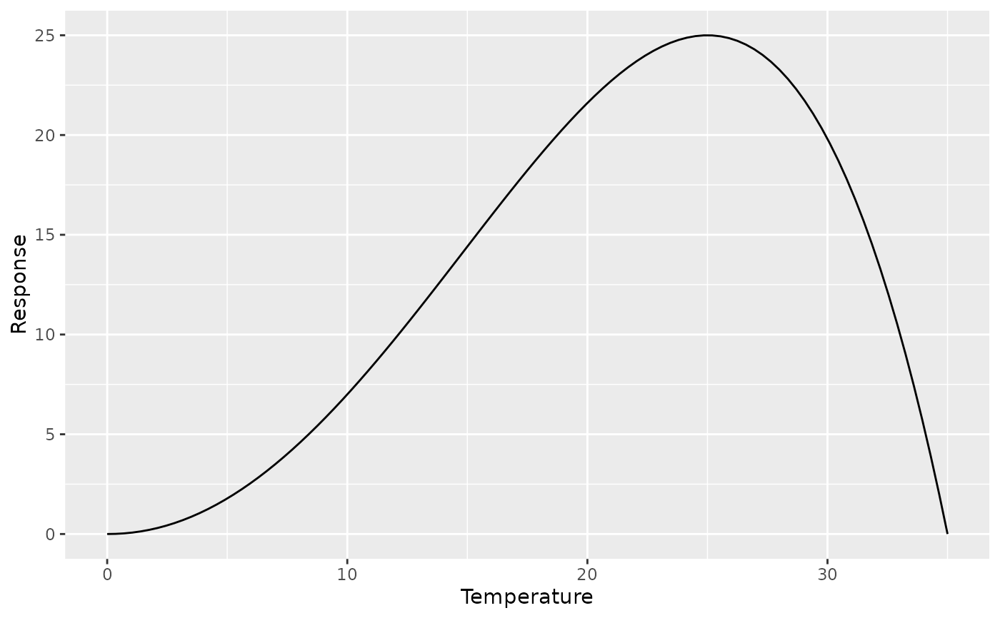

Calculate the shape of the Wang and Engel beta temperature response function defined by three cardinal temperatures.
Arguments
- min_temp
The minimum cardinal temperature.
- opt_temp
The optimum cardinal temperature.
- max_temp
The maximum cardinal temperature.
- beta
The exponent applied to the relative response (0-1). Default is 1.
- n
The number of evenly spaced temperatures between
min_tempandmax_tempat which the response is evaluated. Default is 101.
References
Wang E, Engel T (1998). Simulation of phenological development of wheat crops. Agricultural Systems 58, 1-24.
Examples
library(ggplot2)
tt <- wang_engel_tt(0, 25, 35)
res <- tt
res |>
ggplot() +
geom_line(aes(x = x, y = y), data = res) +
labs(x = "Temperature", y = "Response")

wang_engel_tt(0, 25, 35, beta = 0.5, n = 36)
#> x y
#> 1 0 0.000000
#> 2 1 1.283523
#> 3 2 2.618282
#> 4 3 3.968360
#> 5 4 5.323256
#> 6 5 6.676085
#> 7 6 8.021246
#> 8 7 9.353699
#> 9 8 10.668657
#> 10 9 11.961420
#> 11 10 13.227283
#> 12 11 14.461459
#> 13 12 15.659025
#> 14 13 16.814866
#> 15 14 17.923624
#> 16 15 18.979643
#> 17 16 19.976900
#> 18 17 20.908937
#> 19 18 21.768765
#> 20 19 22.548760
#> 21 20 23.240519
#> 22 21 23.834692
#> 23 22 24.320747
#> 24 23 24.686670
#> 25 24 24.918550
#> 26 25 25.000000
#> 27 26 24.911327
#> 28 27 24.628286
#> 29 28 24.120136
#> 30 29 23.346441
#> 31 30 22.251410
#> 32 31 20.752942
#> 33 32 18.718463
#> 34 33 15.900007
#> 35 34 11.684104
#> 36 35 0.000000